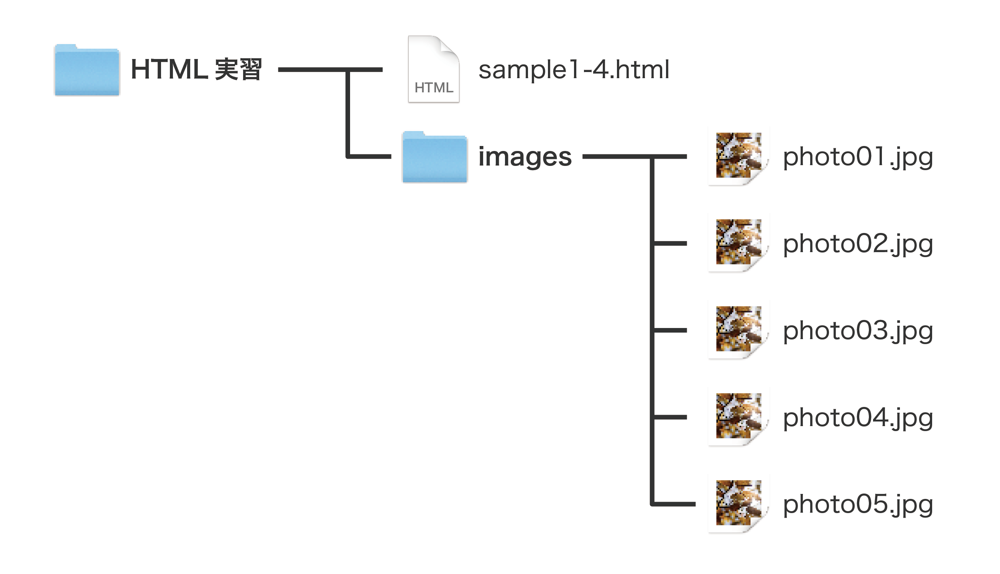
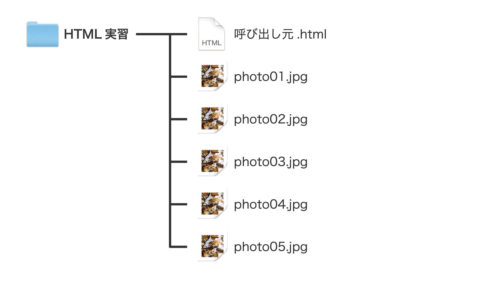
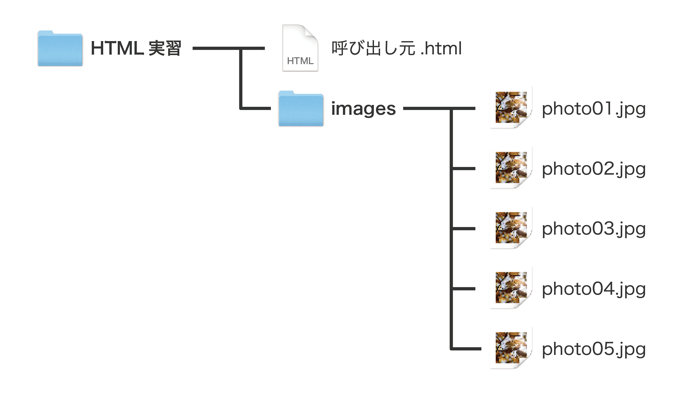

(1) 画像の保存先
Webサイトの画像はサイト内のどこに保存されていても呼び出すことは可能ですが、多くのサイトでは画像専用のフォルダを作成して保存しています。この実習でも基本的には画像専用のフォルダ（imagesフォルダ）を作成し、そこに画像を保存することにします。

imagesフォルダの作成
HTML実習フォルダの中に新しく「images」フォルダを作成します。
これ以降、画像ファイルは基本的にimagesフォルダの中に保存することにします。
サンプル画像の保存
次のリンクをクリックして、サンプル画像をダウンロードし、imagesフォルダの中に保存してください。
(2) 画像の挿入
<img>タグ
画像を挿入するには<img>タグを使います。ただし、<img>と書くだけでは画像は表示されません。<img>タグの中に次の属性を加えることで画像を表示します。
| 属性 |
概要 |
| src |
表示する画像ファイルのパスを指定します（必須属性）。パスとは、ファイルの場所を表す文字列のことです（詳細は次項で解説します）。 |
| width |
画像の横幅をピクセルで指定します。 |
| height |
画像の高さをピクセルで指定します。 |
| alt |
画像を表示できないブラウザの場合や読み込みに失敗した場合に画像の代替として表示するテキストを指定します。 |
つまり、画像を表示するときには、次のような記述になります。
<img src="パス" width="横幅" height="高さ" alt="代替テキスト">
実際に、<img>タグを使って画像を挿入してみましょう。次のコードを書き写してください。末尾の
<br>タグは改行です。これがないと、画像に続けて文字や他の画像が同じ行内に表示されます。
<img src="./images/photo01.jpg" width="480" height="320" alt="写真01"> <br>
width属性とheight属性は、ブラウザ上で画像の表示サイズを指定します。必須ではありませんがブラウザがページを読み込む際に指定したサイズ分の画像スペースを先に表示し、テキスト部分の読み込みを始めることができます。このことで、閲覧者の体感速度が上がりますので、できるだけ指定するようにしましょう。
続けて、photo02.jpg〜05.jpgも表示しましょう。属性の値は次の表を参考にしてください。なお、photo03.jpgとphoto05.jpgは縦長の写真画像なので、横幅だけ指定すればその比に合わせて表示されます。
<!-- 下記の表を参考に、photo02.jpg〜photo05.jpgを表示させるタグを記入する -->
| 画像ファイル |
横幅 |
高さ |
代替テキスト |
| photo02.jpg |
300 |
200 |
写真02 |
| photo03.jpg |
320 |
指定なし |
写真03 |
| photo04.jpg |
510 |
340 |
写真04 |
| photo05.jpg |
300 |
指定なし |
写真05 |
(3) ファイルパスについて
<img>タグで画像ファイルを指定したり、他のページへ移動するためのリンクを指定したりするときには、呼び出し元のページから、対象のファイルを指定します。ファイルの位置を指定するための記述をパスといい、相対パスと絶対パスの２通りの記述方法があります。
相対パス
呼び出し元のファイルからみた、対象のファイルの位置を指定する方法です。
呼び出し元と同一フォルダにあるファイルを参照
呼び出し元のファイルと同一フォルダにあるファイルは、「./」のあとに続けてファイル名を記述します。例えば、同じフォルダにあるphoto01.jpgという画像を表示する場合は次のように記述します。

<img src="./photo01.jpg">
「./」は省略可能なので、次のようにファイル名のみを記述しても表示されます。
<img src="photo01.jpg">
特定のフォルダ内にあるファイルを参照
特定のフォルダ内にあるファイルを指定する場合は、「/」を使って「フォルダ名/ファイル名」と記述します。
呼び出し元と同一フォルダにある「images」というフォルダの中にある場合は次のように記述します。

<img src="./images/photo01.jpg">
１つ上の階層を指定する場合は、「../」を使います。呼び出し元のフォルダと同階層にある「images」というフォルダの中にある場合は次のように記述します。
<img src="../images/photo01.jpg">
絶対パス
絶対パスは呼び出したいファイルが別のWebサイトで公開されている場合に指定します。httpやhttpsから始まるWebサイトのアドレス（URL）を使ってファイルの場所を指定します。
<img src="https://www.kaijo.ed.jp/wp-content/themes/kaijo-pc/assets/img/apple-touch-icon.png">
{kind=link}
{kind=link}
{kind=link}
{kind=link}
{kind=link}